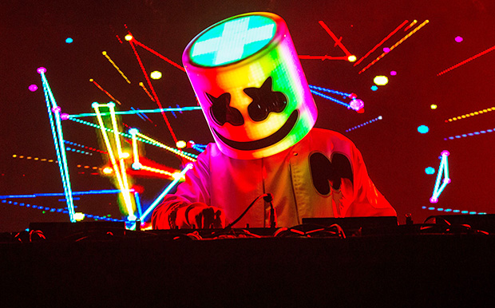

HOME
GUITARIST
PIANIST
DRUMMER
MUSICIANS
CREDITS
MARSHMELLO

Christopher Comstock (born May 19, 1992), known professionally as Marshmello, is an American electronic music producer and DJ. His songs "Silence", "Wolves", "Friends", "Happier", and "Alone" have been certified multi-platinum in several countries and appeared in the Top 30 of the Billboard Hot 100. His musical style includes groove-oriented, synth and bass-heavy electronic dance music.He is managed by Moe Shalizi.
Marshmello first gained international recognition in early 2015 by publishing remixes online. His debut studio album, Joytime, was released in January 2016, which included the lead single and Marshmello's debut single "Keep It Mello". "Alone", a platinum-certified single was released in May 2016 via the Canadian record label Monstercat. Having peaked on the US Billboard Hot 100 at number 60, it became his first single to be certified platinum in the US and Canada with over 1 million copies of certified units. That year, he released three subsequent singles. In 2017, after releasing singles such as "Chasing Colors", "Twinbow" and "Moving On", Marshmello collaborated with American R&B singer Khalid to release "Silence" as a single, which was certified platinum and multi-platinum in eight countries. Succeeding another single, one of his bestselling singles, a collaboration with American singer Selena Gomez, titled "Wolves" was released.
In 2018, he released "Friends", a collaboration with British singer Anne-Marie. Months later, his second studio album, Joytime II, was released with singles "Tell Me" and "Check This Out". "Happier", a collaboration with British band Bastille, was released in August and became his highest-charting song on the Billboard Hot 100 at #2. In 2019, he earned $40 million, ranking second on the list of highest paid DJs compiled by Forbes. In 2020, he and American rapper Juice Wrld released "Come & Go", from the latter's posthumous album Legends Never Die; the song reached number two on the Billboard Hot 100, matching "Happier" as his highest-charting song. In 2021, his album Shockwave earned him a Grammy nomination.
Marshmello wears a custom white helmet, resembling a marshmallow, for public appearances and in his music videos. His identity was initially a secret, but was confirmed by Forbes to be Chris Comstock in April 2017.
KNOW MORE!!
ED SHEERAN
Edward Christopher Sheeran MBE (/ˈʃɪərən/; born 17 February 1991) is an English singer-songwriter. Born in Halifax, West Yorkshire and raised in Framlingham, Suffolk, he began writing songs around the age of eleven. In early 2011, Sheeran independently released the extended play, No. 5 Collaborations Project. He signed with Asylum Records the same year.
Sheeran's debut album, + (pronounced "plus"), was released in September 2011 and topped the UK Albums Chart. It contained his first hit single "The A Team". In 2012, Sheeran won the Brit Awards for Best British Male Solo Artist and British Breakthrough Act. Sheeran's second studio album, × (pronounced "multiply"), topped charts around the world upon its release in June 2014. It was named the second-best-selling album worldwide of 2015. In the same year, × won Album of the Year at the 2015 Brit Awards, and he received the Ivor Novello Award for Songwriter of the Year from the British Academy of Songwriters, Composers and Authors. A single from ×, "Thinking Out Loud", earned him the 2016 Grammy Awards for Song of the Year and Best Pop Solo Performance.
Sheeran's third album, ÷ (pronounced "divide"), was released in March 2017, and was the best-selling album worldwide of 2017. The first two singles from the album, "Shape of You" and "Castle on the Hill", broke records in a number of countries by debuting in the top two positions of the charts. He also became the first artist to have two songs debut in the US top 10 in the same week. By March 2017, Sheeran had accumulated ten top 10 singles from ÷ on the UK Singles Chart, breaking the record for most top 10 UK singles from one album. His fourth single from ÷, "Perfect", reached number one in the US, Australia and the UK, where it became the Christmas number one in 2017. The world's best-selling artist of 2017, he was named the Global Recording Artist of the Year. Released in 2019, his fourth studio album No.6 Collaborations Project debuted at number one in most major markets, and spawned three UK number one singles, "I Don't Care", "Beautiful People" and "Take Me Back to London". His fifth studio album, = (pronounced "equals"), topped the charts in most major markets in 2021.
Sheeran has sold more than 150 million records worldwide, making him one of the world's best-selling music artists.[6] He has 84.5 million RIAA-certified units in the US,[7] and two of his albums are in the list of the best-selling albums in UK chart history. In December 2019, the Official Charts Company named him artist of the decade, with the most combined success in the UK album and singles charts in the 2010s.[8] Globally, Spotify named him the second most streamed artist of the decade.[8] Beginning in March 2017, his ÷ Tour became the highest-grossing of all time in August 2019. An alumnus of the National Youth Theatre in London, Sheeran's acting roles include appearing in the 2019 film Yesterday.
KNOW MORE!!